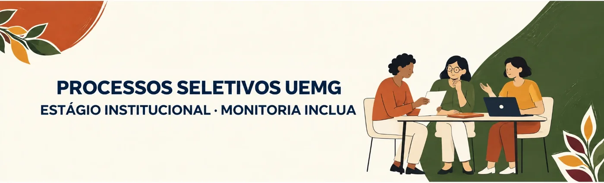

Estágio na UEMG e Monitoria INCLUA
Dois processos seletivos para você trabalhar dentro da universidade, com bolsa, 20 horas por semana. Eles formam o cadastro de reserva de 2027, e a PROEX avisou que não há previsão de novos editais dessas modalidades ao longo do ano: a chance é agora.
Inscrições do estágio até 9 de novembro, às 23h30
Em Guanhães a vaga é de cadastro de reserva. Não há um número fixo de vagas: quem for classificado entra numa lista e é chamado, na ordem, quando a Unidade precisar de estagiário, quando alguém desistir ou quando for preciso substituir. A lista vale por 1 ano, prorrogável, e só é usada depois que acabar a lista do edital anterior.
Estágio Institucional Não Obrigatório
É um estágio remunerado dentro da própria UEMG, num setor da Unidade Guanhães, como prática ligada à sua formação. Não cria vínculo de emprego: tudo é feito por um Termo de Compromisso de Estágio entre você, a UEMG e o agente de integração.
Bolsa de estágio
R$ 910,59 por mês
Paga pela empresa contratada, a partir do 10º dia útil do mês seguinte ao trabalhado.
Auxílio-transporte
R$ 275,00 por mês
Pelo estágio feito presencialmente na Unidade.
Seguro
Contra acidentes
Seguro de acidentes pessoais durante todo o estágio.
Recesso remunerado
15 dias por semestre
De preferência nas férias, com estágio de 6 meses ou mais (ou proporcional).
Como é a rotina São 4 horas por dia, 20 por semana, de manhã, à tarde ou à noite, conforme a vaga. O contrato dura 6 meses e pode ser renovado a cada 6 meses, até 2 anos, se a vaga continuar e houver orçamento. O turno, o setor e as atividades da vaga de Guanhães ainda vão ser divulgados: o NAE coloca aqui assim que sair.
Quem pode concorrer ao estágio
Direito e Engenharia Civil da Unidade Guanhães. Você concorre só às vagas da sua Unidade, e a uma vaga só.
E, para continuar no estágio, 75% de frequência no curso e rendimento de pelo menos 60% no semestre.
50% ficam reservadas para quem ingressou pelo PROCAN. Sem inscritos do PROCAN, a vaga vai para a ampla concorrência.
O auxílio estudantil do PEAES não conta como acúmulo. E ter sido aprovado no último PEAES é o primeiro critério de desempate.
O estágio não acumula com bolsa de pesquisa, extensão, monitoria, iniciação científica, PET ou monitoria de estudantes com necessidades especiais. Se for chamado, terá de escolher.
Quem já é estagiário na UEMG, servidores da UEMG e quem foi desligado de estágio anterior por não cumprir as obrigações. Também não assume a vaga quem tiver choque de horário com as próprias aulas.
Passo a passo da inscrição no estágio
A inscrição é só pelo formulário on-line do edital. Não há documentos para anexar nesta fase: a seleção é feita por uma prova escrita.
-
Tenha o e-mail institucional funcionando
Você vai informar o @discente.uemg.br, e é por ele que chegam o comprovante e a convocação para a prova. Não sabe a senha? Veja o guia do e-mail institucional.
-
Preencha o formulário de inscrição
Pelo formulário do edital, escolhendo a Unidade Guanhães. Confira nome, matrícula, curso e e-mail antes de enviar: erro de preenchimento não pode ser corrigido por recurso.
-
Guarde o comprovante
Ao enviar, o sistema manda uma cópia do formulário para o seu e-mail: ela é o comprovante. Se enviar mais de uma vez, só vale o último formulário.
-
Confira seu nome na lista de 11/11
A lista das inscrições sai no site da UEMG. Ficou de fora? O recurso é em 12 e 13/11, pelo formulário de recurso I.
-
Fique de olho no e-mail em 18/11
A convocação para a prova chega pelo e-mail institucional e pede confirmação de leitura. Responda e anote dia, hora e local.
A prova: um texto sobre um tema
A seleção é só pela prova. Você escreve um texto sobre um tema proposto pela Unidade, que também marca o dia e o horário. A nota vai de 0 a 10, e a nota mínima para ser classificado é 5.
| O que é avaliado no texto | Pontos |
|---|---|
| Organização das ideias | 3,0 |
| Coerência com o tema proposto | 2,0 |
| Objetividade | 2,0 |
| Clareza e concisão | 2,0 |
| Ortografia | 1,0 |
| Total | 10,0 |
Para escrever bem na prova
- Leia o tema duas vezes e responda exatamente ao que foi pedido.
- Antes de escrever, anote em tópicos o que vai dizer: introdução, dois ou três argumentos e a conclusão.
- Um parágrafo para cada ideia, com frases curtas e diretas.
- Reserve os últimos minutos para reler e corrigir a ortografia.
Quem fica na frente
- Quem foi aprovado no último edital do PEAES. Mais um motivo para se inscrever no PEAES Veteranos 2027.
- Quem tem 60 anos ou mais.
- Quem é mais velho.
Cronograma do estágio
- Publicação do edital
- Inscrições pelo formulário, até as 23h30 do último dia
- Lista das inscrições, no site da UEMG
- Recurso contra a lista de inscrições
- Inscrições homologadas
- Convocação para a prova, pelo e-mail institucional
- Prova, no dia e horário marcados pela Unidade
- Resultado preliminar
- Recurso contra o resultado preliminar
- Resultado final
- Convocação dos classificados, conforme as vagas da Unidade
Mudanças no cronograma saem na página da UEMG. Os resultados trazem nome, matrícula, curso e classificação.
Depois do resultado
Recurso São 2 dias úteis depois da lista de inscrições (formulário de recurso I, 12 e 13/11) e depois do resultado preliminar (formulário de recurso II, 07 e 08/12). O texto tem até 500 caracteres, sem anexos, com argumentos objetivos. Para recorrer da nota, você pode pedir o espelho de correção da sua prova. Não cabe recurso do resultado do recurso.
Fui chamado. E agora?
- A Unidade manda o link do formulário de cadastro da empresa contratada. Preencha completo e correto: cadastro incompleto ou errado passa a vaga para o próximo da lista.
- Depois vem a assinatura do Termo de Compromisso de Estágio. O estágio pode começar assim que todas as assinaturas estiverem feitas.
- Estudantes com deficiência apresentam laudo médico atualizado e original para assinar o termo, exceto quem ingressou pelo PROCAN na categoria VI, que já apresentou.
- Ser classificado não garante o estágio: a chamada depende de vaga e da necessidade da Unidade.
Monitoria do Programa INCLUA
O edital da Monitoria INCLUA ainda não foi publicado: a PROEX avisou que ele sai nos próximos dias, também para formar o cadastro de reserva de 2027. Assim que sair, esta seção ganha as datas, os valores e o link da inscrição.
O que é. Uma bolsa para você apoiar colegas que são Pessoas Público-Alvo da Educação Especial e Inclusiva: estudantes com deficiência, Transtorno do Espectro Autista, TDAH, síndromes, doenças crônicas, altas habilidades e outras condições que limitam a autonomia nas atividades acadêmicas. O monitor ajuda a ler e digitalizar materiais, transcrever, descrever imagens e gráficos, se locomover pela Unidade e o que mais estiver no Plano de Atendimento Especializado do colega, sempre com um professor orientador. Ele nunca faz provas ou trabalhos no lugar do colega.
Como é a seleção. Com entrevista, leitura de um texto em voz alta e avaliação da sua experiência. O perfil de cada vaga depende das necessidades dos estudantes atendidos.
Como foi no edital de 2026 (nº 03/2026, para ter uma ideia): bolsa de R$ 850,00 por mês, 20 horas semanais, boa leitura e dicção, de preferência em turno diferente do colega apoiado, permanência mínima de 6 meses e um curso de Educação Especial oferecido pela UEMG. Os números de 2027 podem mudar: valem os do edital novo.
Dá para se inscrever nos dois processos, mas não exercer os dois ao mesmo tempo: o estágio não acumula com a monitoria de estudantes com necessidades especiais. Publicações do INCLUA: página do Programa INCLUA na UEMG.
Dúvidas frequentes
Quanto vou receber, no total?
R$ 1.185,59 por mês: R$ 910,59 de bolsa e R$ 275,00 de auxílio-transporte, que é pago pelo estágio feito presencialmente na Unidade.
Já estou no cadastro de reserva do edital anterior. Perco o lugar?
Não. O edital novo não anula as listas anteriores, que continuam sendo chamadas primeiro. A lista nova só é usada quando as antigas acabarem.
Posso concorrer a uma vaga de outra Unidade?
Não. Cada estudante concorre só às vagas da Unidade em que está matriculado, e a uma vaga só.
Não recebi o comprovante no e-mail.
Confira a caixa de spam do e-mail que você informou. Se não chegou, preencha de novo dentro do prazo (só o último formulário vale) ou procure o NAE.
Tenho bolsa de extensão ou de iniciação científica. Posso me inscrever?
Pode se inscrever, mas não pode acumular. Se for chamado para o estágio, terá de escolher entre ele e a outra bolsa remunerada da UEMG. O PEAES é a exceção: ele pode ser recebido junto.
Esse estágio vale como estágio obrigatório do curso?
Não: é um estágio não obrigatório. Ele pode contar como atividade complementar, conforme a regra do seu curso. Veja a tabela em Atividades complementares.
Minhas aulas são à noite. Posso ter estágio à noite?
O turno da vaga ainda vai ser divulgado. Se o horário do estágio bater com o das suas aulas, você não pode assumir a vaga, qualquer que seja a sua classificação.
Edital para baixar
Cópia do arquivo publicado pela UEMG em 23/10/2026. Retificações e resultados saem primeiro na página oficial do edital do estágio. O edital da Monitoria INCLUA entra aqui quando for publicado.
O NAE Guanhães ajuda você
Para entender o edital, fazer a inscrição e se preparar para a prova. O edital indica o NAE da sua Unidade como canal de atendimento.
- Onde
- Sala do NAE, no Prédio do Administrativo
- Quando
- Terças e quintas, das 18h às 19h, sem agendamento. Às quartas, com agendamento pelo e-mail
- nae.guanhaes@uemg.br
O NAE orienta, mas a inscrição, a prova e o acompanhamento das publicações são de responsabilidade de cada estudante.